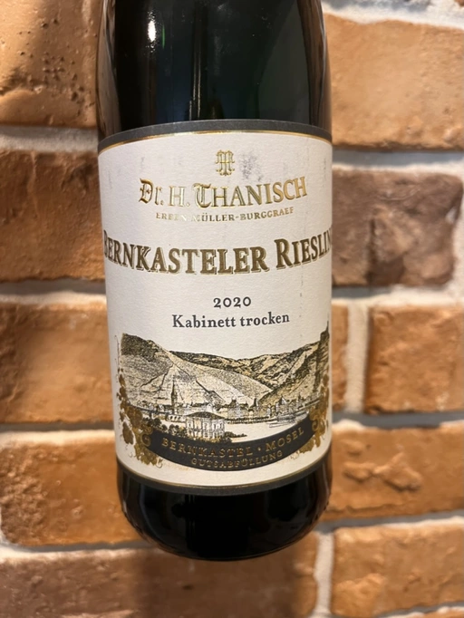

- Type
- White Still, Dry
- Producer
- Witwe Dr. H. Thanisch Erben Müller-Burggraef
- Vintage
- 2020
- Location
- Germany, Mosel
- Grapes
- Riesling
- Alcohol
- 10.5
- Sugar
- NA
- Price
- 444 UAH
- Cellar
- N/A
Ratings
2022-08-21 - 7.00
A wine that I would gladly drink somewhere on a tropical island, enjoying the view and tranquillity. It would help to bear the heat thanks to high acidity and not make me overly dizzy thanks to the low alcohol level. I would not need to strain my brain as the bouquet is simple and matches the surroundings: lime, hints of pineapple and wet stone. The aftertaste is short, but it suffices. So this wine is not complex, watery and pleasant.